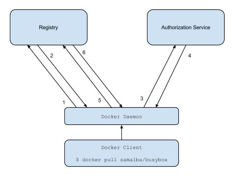

Docker Registry is a stateless server-side application that can act as a central repository for Docker images, Docker has its own free to use central registry called Docker Hub.
Setting up your own Docker Registry in your production environment, gives you control over what image being stored and control over the Continuous Integration/Continuous Delivery (CI/CD) workflow, where you can push changes to the source control repo, then the CI tool of your choice pulls the image from your private Registry, run the tests and then build the image and push it to the private registry, then a Docker API will be triggered to deploy the new image into production.
In this post i am going to setup a private Docker registry with centralized authentication server, using this method can give you more access control over the users and the Docker images being stored.
Docker Registry 2.0
Registry 2.0 offers faster push and pull of images and has a new API implementation, the new version also has number of cool new features like a pluggable storage backend and webhook notifications.
Registry 2.0 offers also a new native authentication mechanism using JWT tokens, and simplify the authentication processes by eliminating the excessive communication part between the registry and the authentication server, and depend on cryptographically signed token.
As described in the fully detailed documentation of Docker authentication by token, the authentication process can be described in 6 steps:

- The Docker client tries to push/pull from the registry.
- The Registry will send him a 401 Unauthorized response if he is not authenticated , with information on how to authenticate with the auth server.
- The client send a request for a Json Web Token from the authorization service.
- The authorization service returns the token.
- The client tries to reconnect to the registry but this time with the token in the Authorization header.
- The registry authorize the client and continue the operation.
Lets breakdown these steps into understandable points:
Step #1 Client connection to the registry
The Docker client will try to connect to the Docker registry server to perform pull/push operation, using docker push or docker pull commands.
Note that when trying to access a remote Docker registry, you required to use tls to authenticate with the registry, or else you will get the following error:
FATA[0000] Error response from daemon: v1 ping attempt failed with error: Get https://registry.example.com:5000/v1/_ping: tls: oversized record received with length 20527. If this private registry supports only HTTP or HTTPS with an unknown CA certificate,please add `--insecure-registry registry.example.com:5000` to the daemon's arguments. In the case of HTTPS, if you have access to the registry's CA certificate, no need for the flag; simply place the CA certificate at /etc/docker/certs.d/registry.example.com:5000/ca.crt
To overcome this issue, you can either buy a certificate for your domain or use self signed certificate, or as we will do in this example start docker with the following option:
--insecure-registry registry.example.com:5000
Step #2 Unauthorized response
The registry server will respond with 401 Unauthorized code, and information about the Authentication endpoint:
$ curl https://registry.example.com:5000/v2 -k -IL
HTTP/1.1 301 Moved Permanently
Docker-Distribution-Api-Version: registry/2.0
Location: /v2/
Date: Tue, 14 Jul 2015 23:00:43 GMT
Content-Type: text/plain; charset=utf-8
HTTP/1.1 401 Unauthorized
Content-Type: application/json; charset=utf-8
Docker-Distribution-Api-Version: registry/2.0
Www-Authenticate: Bearer realm="https://auth.example.com:5001/auth",service="Docker registry"
Date: Tue, 14 Jul 2015 23:00:43 GMT
Content-Length: 114
The authentication response header contain information on how to request a token from the authorization end point, it consists of important query parameters:
realm: describe the authorization endpoint.
realm="https://auth.example.com:5001/auth"
service: describe the name of the service that hold the resources.
service="Docker registry"
scope: which describe the resources that needed to be accessed,and the operation requested by the client (pulled/pushed).
scope="repository:husseingalal/hello:push"
account: an optional attribute which describes the account used for authentication.
account=admin
Step #3,4 Authentication endpoint communication
These two steps describe the communication between the client and the authorization endpoint, the detailed process is described in the documentation, but all you need to know that the client sends the request to the authentication server for a signed (a self signed certificate) token, the request will contain the basic authentication information for the requested account which will be matched against the auth server’s user list, if authorized, a token will be generated with information about the user’s allowed scope of resources and will be signed by the server’s key, and the token returned back to the client.
Step #5,6 Final communication
The client tries to connect to the registry, but with the signed token this time, the registry authorize the token for a given period, and start the pull or push operation.
Starting the Registry and Authentication servers
I fired up a machine on DO with docker 1.7 installed, then started an authentication server container, developed by Cesanta Software Ltd, a nice implementation which uses either a static user list for authentication or using Google Sign-In.
I created two directories one for the authentication and one for the registry those dirs contain the configuration and datadir which will be used by the two containers later:
auth_server/ ├── config │ └── auth_config.yml └── ssl ├── server.key └── server.pem docker_registry/ └── data/
The certificate is a self signed certificate:
$ sudo openssl req -x509 -nodes -days 365 -newkey rsa:2048 -keyout server.key -out server.pem
The data directory is where the Docker images will be stored when push to the registry, to start the authentication container, run the following:
docker run -d --name docker_auth -p 5001:5001 \ -v `pwd`/auth_server/config:/config:ro \ -v /var/log/docker_auth:/logs \ --restart=always \ -v `pwd`/auth_server/ssl:/ssl cesanta/docker_auth /config/auth_config.yml
The auth_config.yml will be something like that:
server: # Server settings. # Address to listen on. addr: ":5001" # TLS certificate and key. certificate: "/ssl/server.pem" key: "/ssl/server.key" token: # Settings for the tokens. issuer: "Auth Service" # Must match issuer in the Registry config. expiration: 900 # Static user map. users: # Password is specified as a BCrypt hash. Use htpasswd -B to generate. "admin": password: "$2y$05$B.x046DV3bvuwFgn0I42F.W/SbRU5fUoCbCGtjFl7S33aCUHNBxbq" "hussein": password: "$2y$05$xN3hNmNlBIYpST7UzqwK/O5T1/JyXDGuJgKJzf4XuILmvX7L5ensa" "": {} # Allow anonymous (no "docker login") access. acl: # Admin has full access to everything. - match: {account: "admin"} actions: ["*"] # User "test" has full access to ubuntu image but nothing else. - match: {account: "hussien", name: "ubuntu"} actions: ["*"] - match: {account: "test"} actions: [] # All logged in users can pull all images. - match: {account: "/.+/"} actions: ["pull"] # Anonymous users can pull "hello-world". - match: {account: "", name: "hello-world"} actions: ["pull"] # Access is denied by default.
For more information about the configuration options for this authentication server, refer to the Github repo.
The configuration of the registry is a little tricky, to pass a configuration to the registry:2 container you required to pass as environment variable with prefix “REGISTRY_variable” where variable is the configuration option for a particular section, for example if you want to configure this option:
auth:
token:
issuer: "Auth Service"
It will look like that:
REGISTRY_AUTH_TOKEN_ISSUER="Auth Service"
To configure the registry to use the token mechanism, you should configure the following options:
auth:
token:
realm: The authentication end point.
service: The service name.
issuer: The issuer of the request, must match the issuer in the authentication service configuration.
rootcertbundle: The certificate bundle which its public key used to sign the token.
So now if we want to run the registry container:
$ docker run -d -p 5000:5000 \ -e REGISTRY_STORAGE_FILESYSTEM_ROOTDIRECTORY=/var/lib/registry \ -e REGISTRY_AUTH=token \ -e REGISTRY_AUTH_TOKEN_REALM=https://registry.example.com:5001/auth \ -e REGISTRY_AUTH_TOKEN_SERVICE="Docker registry" \ -e REGISTRY_AUTH_TOKEN_ISSUER="Auth Service" \ -e REGISTRY_AUTH_TOKEN_ROOTCERTBUNDLE=/ssl/server.pem \ -v /root/auth_server/ssl:/ssl \ -v /root/docker_registry/data:/var/lib/registry \ --restart=always \ --name registry registry:2
Using Docker Compose
You can use docker-compose tool to start the containers knowing that the directory structure for the certificate and the configuration is correct:
dockerauth:
image: cesanta/docker_auth
ports:
- "5001:5001"
volumes:
- /root/auth_server/config:/config:ro
- /var/log/docker_auth:/logs
- /root/auth_server/ssl:/ssl
command: /config/auth_config.yml
restart: always
registry:
image: registry:2
ports:
- "5000:5000"
volumes:
- /root/auth_server/ssl:/ssl
- /root/docker_registry/data:/var/lib/registry
restart: always
environment:
- REGISTRY_STORAGE_FILESYSTEM_ROOTDIRECTORY=/var/lib/registry
- REGISTRY_AUTH=token
- REGISTRY_AUTH_TOKEN_REALM=https://auth.example.com:5001/auth
- REGISTRY_AUTH_TOKEN_SERVICE="Docker registry"
- REGISTRY_AUTH_TOKEN_ISSUER="Auth Service"
- REGISTRY_AUTH_TOKEN_ROOTCERTBUNDLE=/ssl/server.pem
# docker-compose up Recreating root_dockerauth_1... Recreating root_registry_1... Attaching to root_dockerauth_1, root_registry_1 registry_1 | time="2015-07-15T00:49:59.002496717Z" level=info msg="endpoint local-8082 disabled, skipping" environment=development instance.id=8bc4349b-bd13-493c-ada0-bd0a189d588f service=registry version=v2.0.1 registry_1 | time="2015-07-15T00:49:59.003016967Z" level=info msg="endpoint local-8083 disabled, skipping" environment=development instance.id=8bc4349b-bd13-493c-ada0-bd0a189d588f service=registry version=v2.0.1 registry_1 | time="2015-07-15T00:49:59.003610408Z" level=info msg="using inmemory layerinfo cache" environment=development instance.id=8bc4349b-bd13-493c-ada0-bd0a189d588f service=registry version=v2.0.1 registry_1 | time="2015-07-15T00:49:59.004509704Z" level=info msg="listening on :5000" environment=development instance.id=8bc4349b-bd13-493c-ada0-bd0a189d588f service=registry version=v2.0.1
As mentioned in the configuration the user hussein only has access on the ubuntu image, so lets try to push another container other than ubuntu image:
$ docker login registry.example.com:5000 Username: hussein Password: ******* Email: WARNING: login credentials saved in /root/.docker/config.json Login Succeeded $ docker pull fedora $ docker tag fedora registry.example.com:5000/fedora $ docker push registry.example.com:5000/fedora The push refers to a repository [registry.example.com/fedora] (len: 1) ded7cd95e059: Image push failed Error pushing to registry: token auth attempt for registry http://registry.example.com:5000/v2/: https://auth.example.com:5001/auth?account=kevin&scope=repository%3Afedora%3Apull%2Cpush&service=Docker+registry request failed with status: 403 Forbidden
But when we try to push the ubuntu image
$ docker pull ubuntu $ docker tag ubuntu registry.example.com:5000/ubuntu $ docker push registry.example.com:5000/ubuntu The push refers to a repository [registry.example.com/ubuntu] (len: 1) d2a0ecffe6fa: Image already exists 29460ac93442: Image successfully pushed b670fb0c7ecd: Image successfully pushed 83e4dde6b9cf: Image successfully pushed Digest: sha256:ec4bf98e38b87b91f239db1643d210bac0da5b87c0f5b294268a0d4664d6adfc
References:
- https://docs.docker.com/registry/spec/auth/token/
- https://docs.docker.com/registry/
- https://tools.ietf.org/html/rfc6750#section-3
- https://github.com/cesanta/docker_auth/blob/master/README.md
- https://docs.docker.com/registry/configuration/